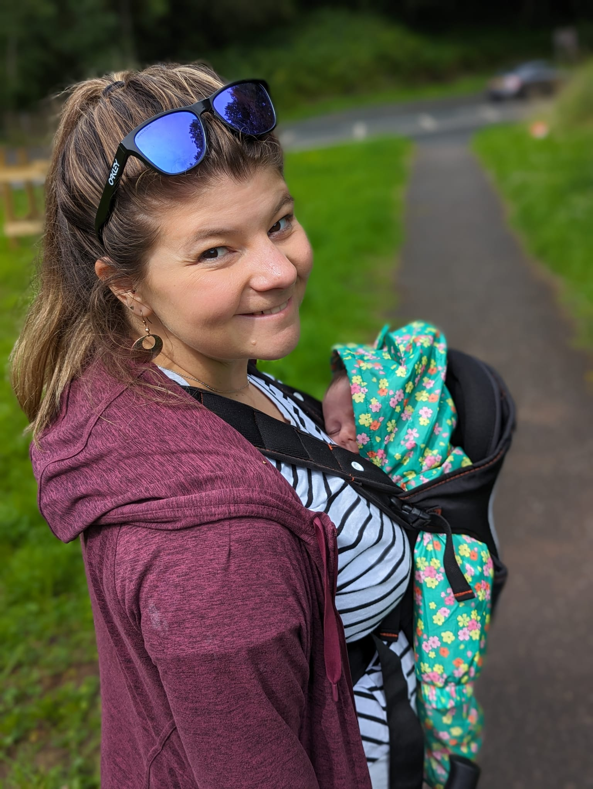

About Briggs Creations
Briggs Creations is led by me, Charlotte Briggs, and is the result of a lifelong love of making. I design and create every piece myself, from the first idea through to the finished artwork.

While the creative work is a solo practice, Briggs Creations is very much supported by family. My husband, Jack, plays an essential role behind the scenes — building and maintaining the website and encouraging me to share my work with the world.
The Story
Creativity has always been part of my everyday life. For as long as I can remember, I’ve spent my evenings making — experimenting, refining, and creating pieces that were often given as gifts.
Over the years, encouragement to sell my work grew louder, and eventually I listened. Briggs Creations was born from that long-held passion and the desire to share my artwork beyond my immediate circle.
The Work
This debut collection is inspired by the Lake District, my home. Each print features an animal native to the area, created using reference photography and reimagined in my own graphic style.
Every animal looks directly at the viewer, creating a strong sense of connection. I work digitally using Procreate, exploring bold, expressive interpretations of colour within fur and feathers, set against a clean white background.

Inspiration & Life
Living in the Lake District is my greatest source of inspiration. Its landscapes, wildlife, and sense of calm influence everything I create. My aim is to pay tribute to this beautiful part of the world by producing artwork that people feel proud to display and keep.
As I balance raising a young family alongside my job, Briggs Creations is shaped naturally by creativity, life, and place — evolving slowly and thoughtfully over time.